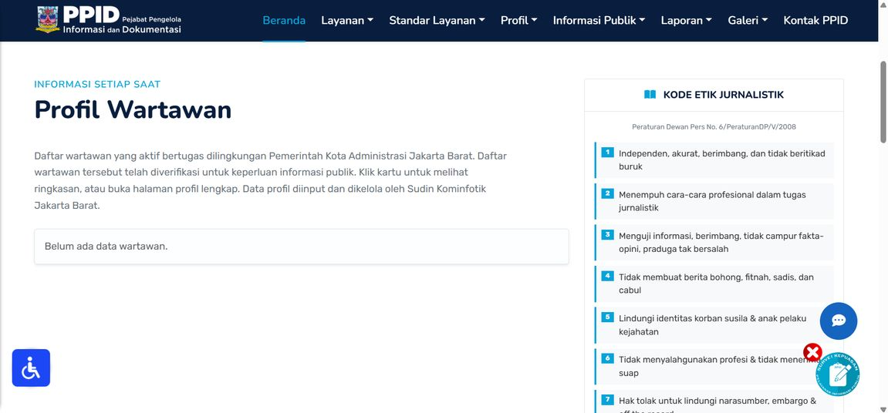

Internship · Live Website
PPID journalist page
A public directory of verified journalists covering the West Jakarta city government, on the Public Information and Documentation Office website.
- UI for media profile and journalist information pages
- Journalist dashboard with account storage, input validation and database sync
- Bug fixes and revisions with the office team
